Keith Weston
User Experience Designer in Austin, TX
Lead Designer, Design System @ Indeed
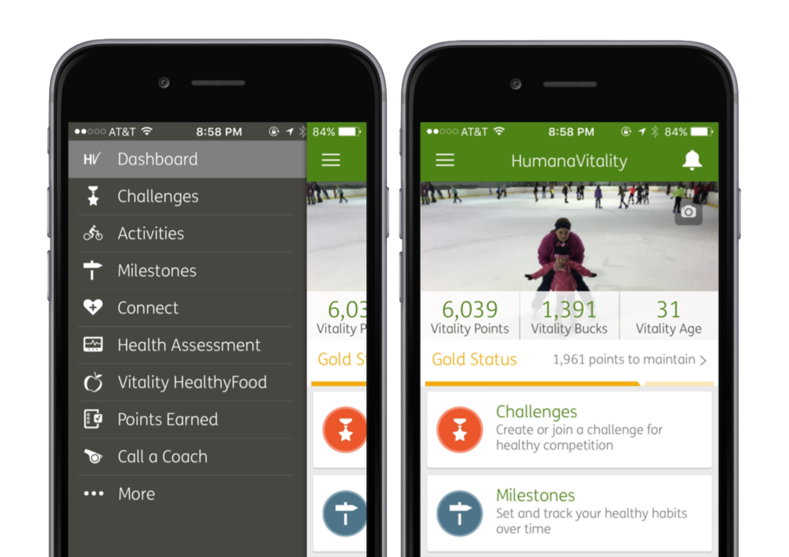
Humana
Roles held:
- Lead Mobile UX Designer (2015 – 2016)
- Mobile UX Designer (2014 – 2015)
- UX Designer (2011 – 2014)
A family of mobile apps
As the lead designer for the mobile apps at Humana, I worked with the 4 teams that created the 4 mobile apps, with each team having 1-2 designers. It was important that these apps act like a family of apps, building recognition and trust with users. I created the template for the app icon so that all 4 apps looked like they belonged together. I also led efforts for new technology across the apps, such as implementing Touch ID in the same manner.
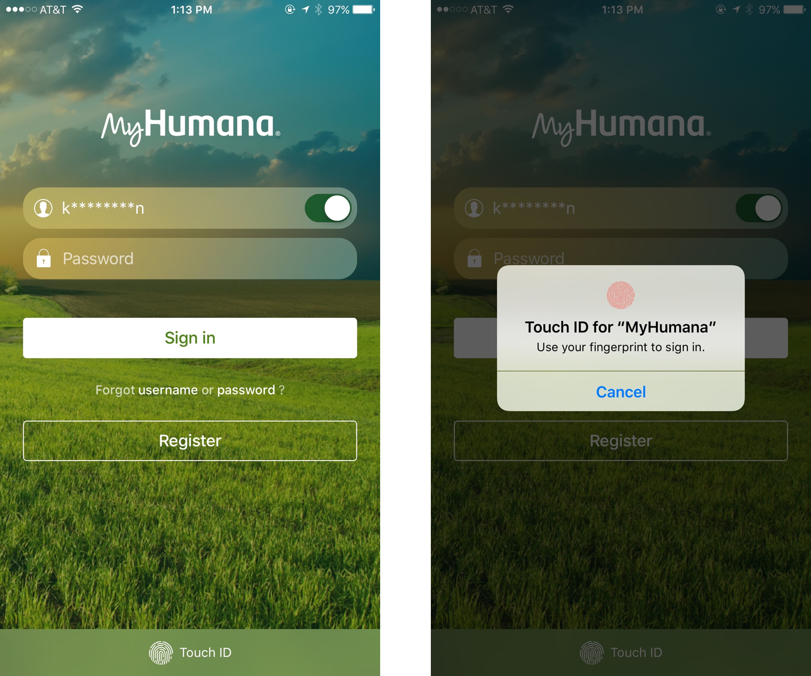
MyHumana mobile app redesign
The primary mobile app for the company, MyHumana, had existed for 2 years by 2015. Through a combination of app reviews, user interviews, analytics, and usability testing, we decided it was time for a redesign. What we learned:
- Performance. The app was very slow compared to other common apps.
- Navigation. Users were having trouble finding areas of the app that were important to them.
- Emphasis of important features. Not all features are created equal. This also included omitting features users did not find useful.
- Native features and styles. The previous app was designed once for both iOS and Android.
The redesign effort began in September 2015 and the app released in February of 2016.
Engineering did what they could to address performance. From design, we used methods to increase perceived affordance, such as breaking up the first sign in process.
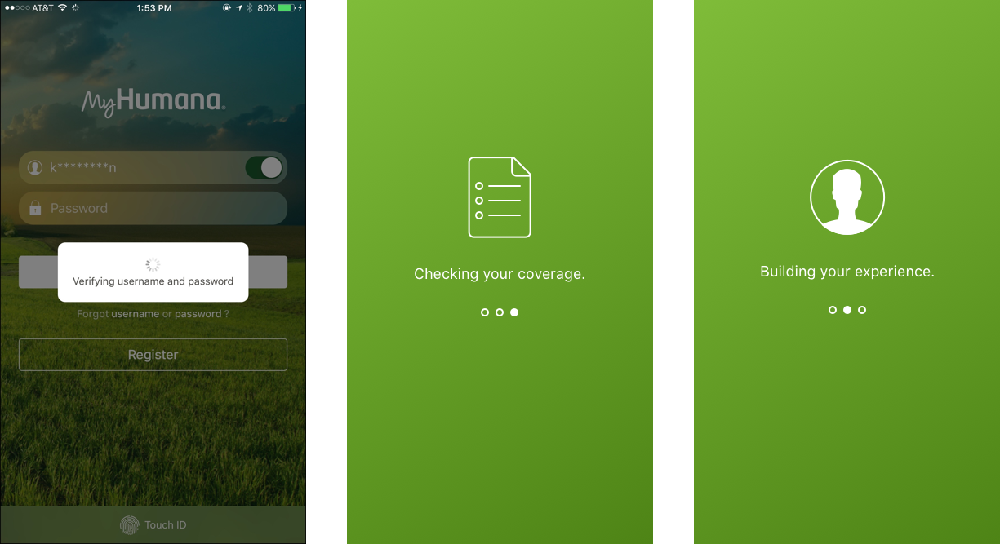
To help determine how prominently to display features, we asked users to rank their importance.
| Category | Average | Rank |
|---|---|---|
| Coverage and Benefits | 2.94 | 1 |
| Claims | 4.20 | 2 |
| Find a Provider | 5.10 | 3 |
| Deductibles | 5.12 | 4 |
| ID Card | 5.22 | 5 |
| Drug Pricing | 6.00 | 6 |
| Contact Humana | 6.61 | 7 |
| Spending Accounts | 6.84 | 8 |
| Secure Messages | 6.96 | 9 |
| Update Personal Information | 7.10 | 10 |
| Notifications | 7.14 | 11 |
We handled navigation differently for iOS and Android, to make the apps feel more authentically mobile by matching the OS patterns. We made adjustments to each view, always talking to users along the way.
The old experience:
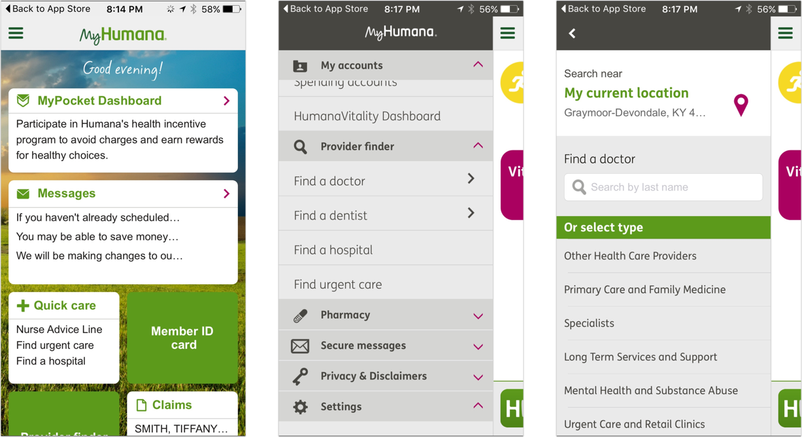
The new experience, iOS and Android:
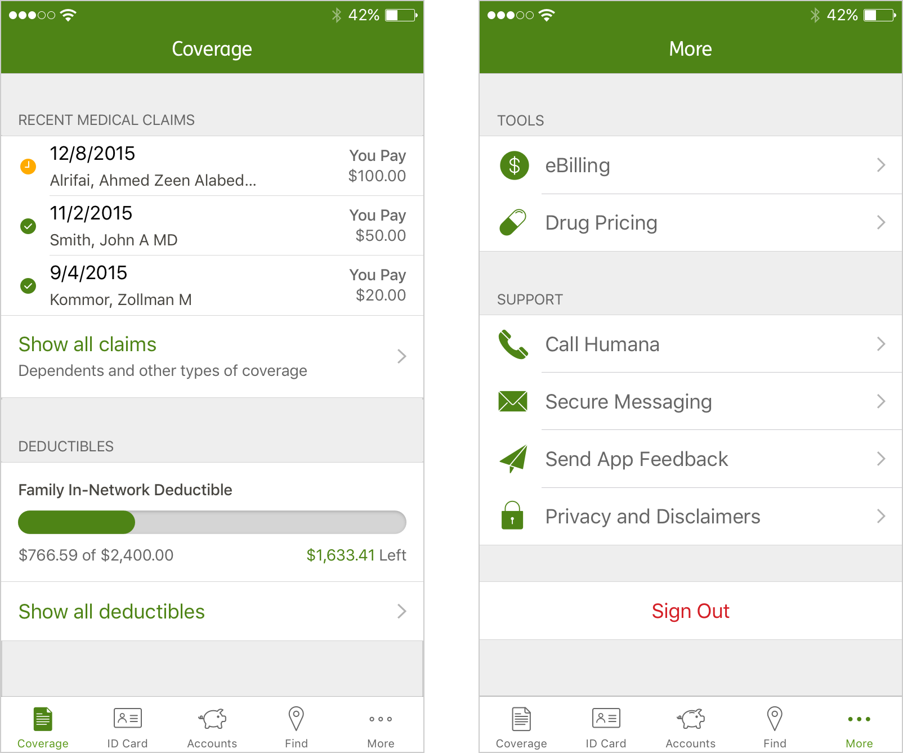
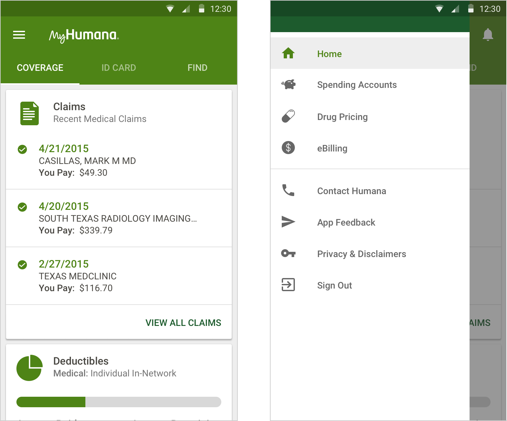
A few other samples with original designs on the left, new designs on the right.
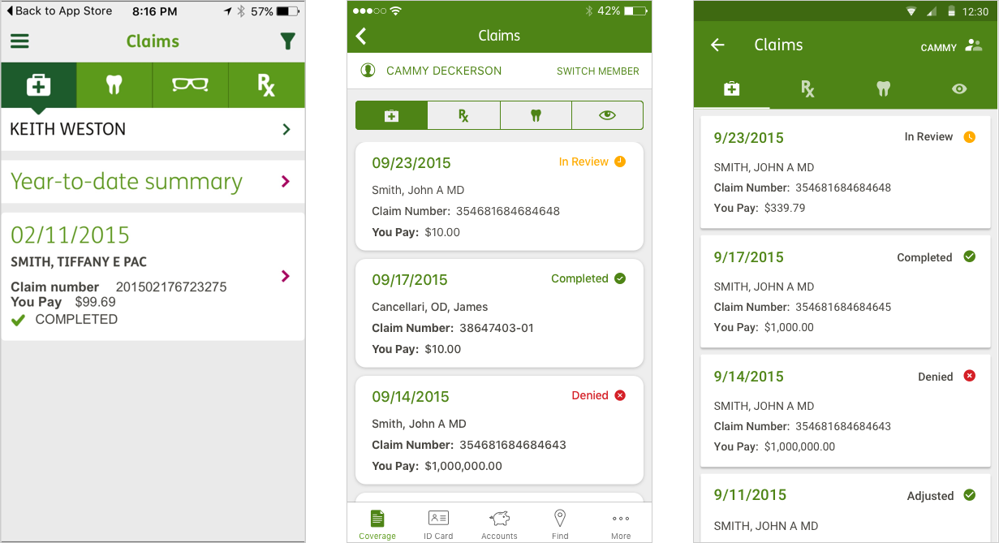
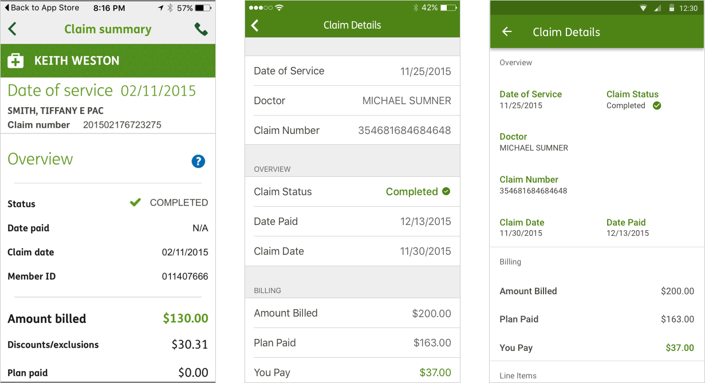
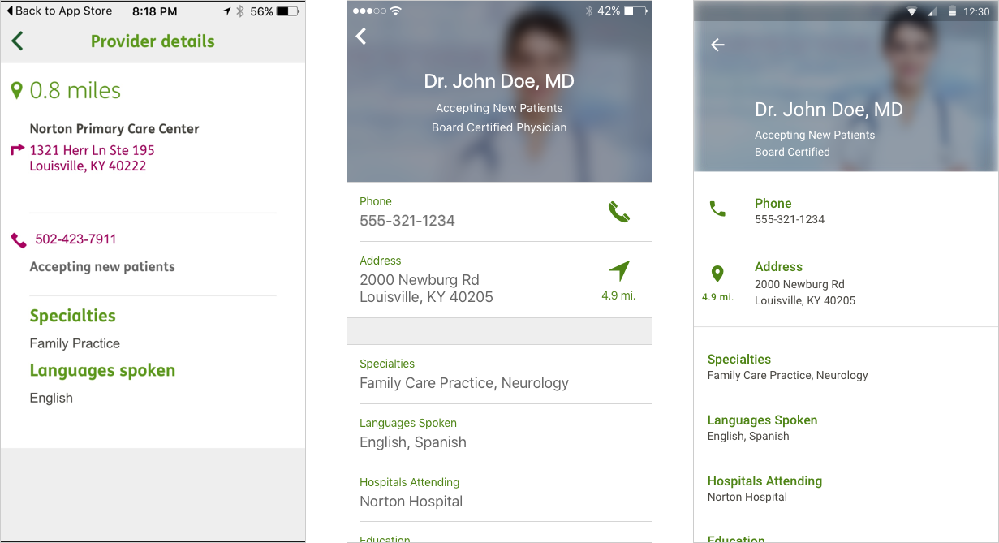
The feedback we received was immediate. 104k users downloaded the redesigned app in the first week. Crashes via analytics were greatly reduced, usability sessions went smoother, and app store ratings increased.
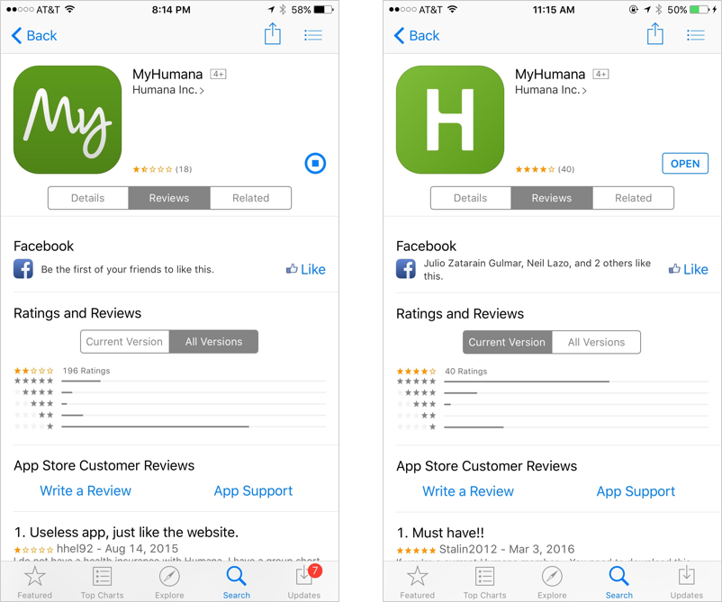
HumanaVitality
Before stepping into the lead design role, my focus was the HumanaVitality mobile app (now branded as Go365). It was an app focused on making members healthy by offering rewards for activity. It was my first experience working with a mobile app, and I learned a great deal about mobile design and technology such as connections with fitness trackers and payment systems.
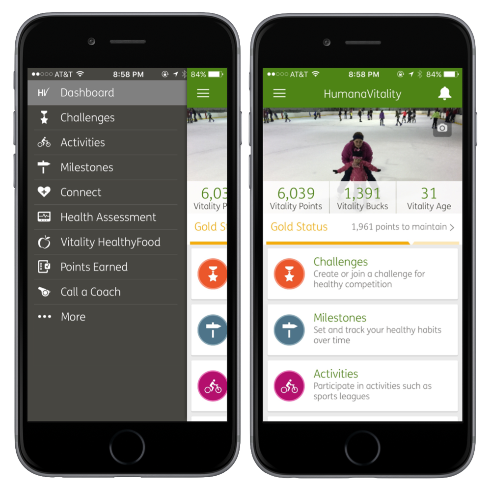
Form design and Operations
Before heading into mobile app design, I worked on applications used by doctors and nurses, mostly data entry. I also shifted to a design operations team, where I taught UX design such as tools and processes to product teams. Here is one of my videos I decided to upload to YouTube, which gained over 200k views. (Keep in mind 2013, content is dated, but gives a good idea on how I taught at the time)